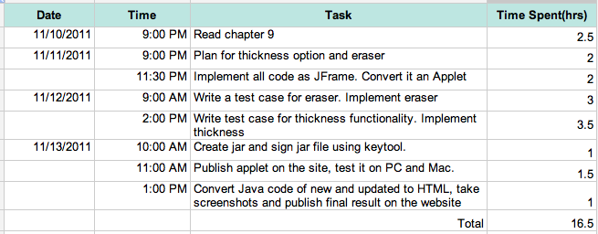
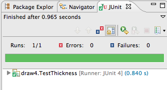
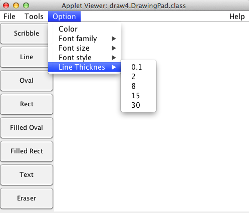
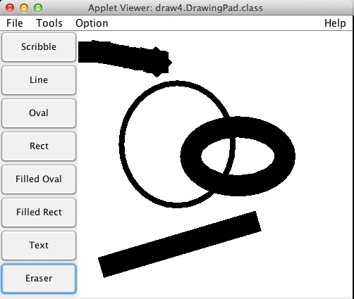

Prepare and document at least one JUnit test case and a planning document for a feature that you will add to the Drawing Pad application.
I. Timesheet
II. Documents
Added 2 features.Line Thickness
Added ability to change thickness of line. Thickness is supported by Graphics2D. All Grapgics references need to be casted to Graphics2D to support thickness.
Changed ScribbleCanvas to make it aware of thickness option, added following methods.
getCurThickness()
setCurThickness(Float thickness)
Implement new menu options by inheriting form drawing3.DrawingPad.
Modify TwoEndsShapeTool to make it aware of current selected thickness.
Modify TwoEndsTool to add set thickness of new shapes when adding a new shape.
Modify Shape class to support thickness, add following methods.
setThickness(BasicStroke thickness)
BasicStroke getThickness()
Modify Stroke and StrokeTool to support thicknes.

Download as PDF
Eraser
Added new eraser tool by inheriting form drawing3.DrawingPad and overriding initTools() method Eraser works as a rectangle. Erases area begind the rectangle shape.

Download as PDF
Known issue about JFileChooser
http://bugs.sun.com/bugdatabase/view_bug.do?bug_id=7036025
http://stackoverflow.com/questions/7558442/cannot-access-applet-containing-jfilechooser-from-jsp
II. Source Code (Changed or new classes only)
scribble3/ScribbleCanvas.java
1: package scribble3;
2:
3: import java.awt.BasicStroke;
4: import java.awt.Color;
5: import java.awt.Dimension;
6: import java.awt.Graphics;
7: import java.awt.Point;
8: import java.util.*;
9: import java.io.*;
10: import java.awt.event.*;
11: import java.util.EventListener;
12: import javax.swing.*;
13:
14: public class ScribbleCanvas extends JPanel {
15:
16: public ScribbleCanvas() {
17: // calling factory method
18: listener = makeCanvasListener();
19: addMouseListener((MouseListener) listener);
20: addMouseMotionListener((MouseMotionListener) listener);
21: }
22:
23: public void setCurColor(Color curColor) {
24: this.curColor = curColor;
25: }
26:
27: public Color getCurColor() {
28: return curColor;
29: }
30:
31: public BasicStroke getCurThickness() {
32: return this.curThickness;
33: }
34:
35: public void setCurThickness(Float thickness){
36: System.out.println("Set cur thickness");
37: curThickness = new BasicStroke(thickness);
38: }
39:
40: public void addShape(Shape shape) {
41: if (shape != null) {
42: shapes.add(shape);
43: }
44: }
45:
46: public void paint(Graphics g) {
47: Dimension dim = getSize();
48: g.setColor(Color.white);
49: g.fillRect(0, 0, dim.width, dim.height);
50: g.setColor(Color.black);
51: if (shapes != null) {
52: Iterator iter = shapes.iterator();
53: while (iter.hasNext()) {
54: Shape shape = (Shape) iter.next();
55: if (shape != null) {
56: shape.draw(g);
57: }
58: }
59: }
60: }
61:
62: public void newFile() {
63: shapes.clear();
64: repaint();
65: }
66:
67: public void openFile(String filename) {
68: try {
69: ObjectInputStream in = new ObjectInputStream(
70: new FileInputStream(filename));
71: shapes = (List) in.readObject();
72: in.close();
73: repaint();
74: } catch (IOException e1) {
75: System.out.println("Unable to open file: " + filename);
76: } catch (ClassNotFoundException e2) {
77: System.out.println(e2);
78: }
79: }
80:
81: public void saveFile(String filename) {
82: try {
83: ObjectOutputStream out = new ObjectOutputStream(new FileOutputStream(
84: filename));
85: out.writeObject(shapes);
86: out.close();
87: System.out.println("Save drawing to " + filename);
88: } catch (IOException e) {
89: System.out.println("Unable to write file: " + filename);
90: }
91: }
92:
93: // factory method
94: protected EventListener makeCanvasListener() {
95: return new ScribbleCanvasListener(this);
96: }
97:
98: // The list of shapes of the drawing
99: // The elements are instances of Stroke
100: protected List shapes = new ArrayList();
101: protected BasicStroke curThickness = new BasicStroke();
102: protected Color curColor = Color.black;
103:
104: protected EventListener listener;
105:
106: public boolean mouseButtonDown = false;
107: public int x, y;
108:
109: }
scribble3/ScribbleTool.java
1:
2:
3: package scribble3;
4:
5: import java.awt.*;
6:
7: public class ScribbleTool extends AbstractTool {
8:
9: public ScribbleTool(ScribbleCanvas canvas, String name) {
10: super(canvas, name);
11: }
12:
13: public void startShape(Point p) {
14: curStroke = new Stroke(canvas.getCurColor());
15: curStroke.setThickness(canvas.getCurThickness());
16: curStroke.addPoint(p);
17: }
18:
19: public void addPointToShape(Point p) {
20: if (curStroke != null) {
21: curStroke.addPoint(p);
22: Graphics g = canvas.getGraphics();
23: Graphics2D g2 = (Graphics2D)g;
24: g2.setStroke(canvas.getCurThickness());
25: g2.setColor(canvas.getCurColor());
26: g2.drawLine(canvas.x, canvas.y, p.x, p.y);
27: }
28: }
29:
30: public void endShape(Point p) {
31: if (curStroke != null) {
32: curStroke.addPoint(p);
33: canvas.addShape(curStroke);
34: curStroke = null;
35: }
36: }
37:
38: protected Stroke curStroke = null;
39:
40: }
scribble3/Shape.java
1:
2:
3: package scribble3;
4:
5: import java.awt.*;
6: import java.io.Serializable;
7:
8: public abstract class Shape implements Serializable {
9:
10: public Shape() {}
11:
12: public Shape(Color color) {
13: this.color = color;
14: }
15:
16: public void setColor(Color color) {
17: this.color = color;
18: }
19:
20: public Color getColor() {
21: return color;
22: }
23:
24: public void setThickness(BasicStroke thickness) {
25: this.thickness = thickness;
26: }
27:
28: public BasicStroke getThickness() {
29: return thickness;
30: }
31:
32: public abstract void draw(Graphics g);
33:
34: protected Color color = Color.black;
35: protected BasicStroke thickness;
36:
37:
38: }
scribble3/Stroke.java
1:
2:
3: package scribble3;
4:
5: import java.util.*;
6: import java.awt.Graphics2D;
7: import java.awt.Point;
8: import java.awt.Color;
9: import java.awt.Graphics;
10:
11: public class Stroke extends Shape {
12:
13: public Stroke() {}
14:
15: public Stroke(Color color) {
16: super(color);
17: }
18:
19: public void addPoint(Point p) {
20: if (p != null) {
21: points.add(p);
22: }
23: }
24:
25: public List getPoints() {
26: return points;
27: }
28:
29: public void draw(Graphics g) {
30: Graphics2D g2 = (Graphics2D)g;
31: if (color != null) {
32: g2.setColor(color);
33: }
34: if (thickness != null) {
35: g2.setStroke(thickness);
36: }
37:
38: Point prev = null;
39: Iterator iter = points.iterator();
40: while (iter.hasNext()) {
41: Point cur = (Point) iter.next();
42: if (prev != null) {
43: g2.drawLine(prev.x, prev.y, cur.x, cur.y);
44: }
45: prev = cur;
46: }
47: }
48:
49: // The list of points on the stroke
50: // elements are instances of java.awt.Point
51: protected List points = new ArrayList();
52:
53: }
draw1/LineShape.java
1: package draw1;
2:
3: import java.awt.*;
4:
5: public class LineShape extends TwoEndsShape {
6:
7: public void draw(Graphics g) {
8: super.beforDraw(g);
9: Graphics2D g2 = (Graphics2D)g;
10: g2.drawLine(x1, y1, x2, y2);
11: }
12:
13: public void drawOutline(Graphics g, int x1, int y1, int x2, int y2) {
14: g.drawLine(x1, y1, x2, y2);
15: }
16:
17: }
draw1/OvalShape.java
1:
2:
3: package draw1;
4:
5: import java.awt.*;
6:
7: public class OvalShape extends TwoEndsShape {
8:
9: public void draw(Graphics g) {
10: super.beforDraw(g);
11: Graphics2D g2 = (Graphics2D)g;
12:
13: int x = Math.min(x1, x2);
14: int y = Math.min(y1, y2);
15: int w = Math.abs(x1 - x2) + 1;
16: int h = Math.abs(y1 - y2) + 1;
17:
18: g2.drawOval(x, y, w, h);
19: }
20:
21: public void drawOutline(Graphics g, int x1, int y1, int x2, int y2) {
22: int x = Math.min(x1, x2);
23: int y = Math.min(y1, y2);
24: int w = Math.abs(x1 - x2) + 1;
25: int h = Math.abs(y1 - y2) + 1;
26: g.drawOval(x, y, w, h);
27: }
28:
29: }
draw1/RectangleShape.java
1:
2:
3: package draw1;
4:
5: import java.awt.*;
6:
7: public class RectangleShape extends TwoEndsShape {
8:
9: public void draw(Graphics g) {
10: super.beforDraw(g);
11: Graphics2D g2 = (Graphics2D)g;
12: int x = Math.min(x1, x2);
13: int y = Math.min(y1, y2);
14: int w = Math.abs(x1 - x2) + 1;
15: int h = Math.abs(y1 - y2) + 1;
16:
17: g2.drawRect(x, y, w, h);
18: }
19:
20: public void drawOutline(Graphics g, int x1, int y1, int x2, int y2) {
21: int x = Math.min(x1, x2);
22: int y = Math.min(y1, y2);
23: int w = Math.abs(x1 - x2) + 1;
24: int h = Math.abs(y1 - y2) + 1;
25: g.drawRect(x, y, w, h);
26: }
27:
28: }
draw1/TwoEndsTool.java
1:
2:
3: package draw1;
4:
5: import java.awt.*;
6:
7: import scribble3.*;
8:
9: public class TwoEndsTool extends AbstractTool {
10:
11: public static final int LINE = 0;
12: public static final int OVAL = 1;
13: public static final int RECT = 2;
14:
15: public TwoEndsTool(ScribbleCanvas canvas, String name, int shape) {
16: super(canvas, name);
17: this.shape = shape;
18: }
19:
20: public void startShape(Point p) {
21: canvas.mouseButtonDown = true;
22: xStart = canvas.x = p.x;
23: yStart = canvas.y = p.y;
24: Graphics g = canvas.getGraphics();
25: g.setXORMode(Color.darkGray);
26: g.setColor(Color.lightGray);
27: switch (shape) {
28: case LINE:
29: drawLine(g, xStart, yStart, xStart, yStart);
30: break;
31: case OVAL:
32: drawOval(g, xStart, yStart, 1, 1);
33: break;
34: case RECT:
35: drawRect(g, xStart, yStart, 1, 1);
36: break;
37: }
38: }
39:
40: public void addPointToShape(Point p) {
41: if (canvas.mouseButtonDown) {
42: Graphics g = canvas.getGraphics();
43: g.setXORMode(Color.darkGray);
44: g.setColor(Color.lightGray);
45: switch (shape) {
46: case LINE:
47: drawLine(g, xStart, yStart, canvas.x, canvas.y);
48: drawLine(g, xStart, yStart, p.x, p.y);
49: break;
50: case OVAL:
51: drawOval(g, xStart, yStart, canvas.x - xStart + 1, canvas.y - yStart + 1);
52: drawOval(g, xStart, yStart, p.x - xStart + 1, p.y - yStart + 1);
53: break;
54: case RECT:
55: drawRect(g, xStart, yStart, canvas.x - xStart + 1, canvas.y - yStart + 1);
56: drawRect(g, xStart, yStart, p.x - xStart + 1, p.y - yStart + 1);
57: break;
58: }
59: canvas.x = p.x;
60: canvas.y = p.y;
61: }
62: }
63:
64: public void endShape(Point p) {
65: canvas.mouseButtonDown = false;
66: TwoEndsShape newShape = null;
67: switch (shape) {
68: case LINE:
69: newShape = new LineShape();
70: break;
71: case OVAL:
72: newShape = new OvalShape();
73: break;
74: case RECT:
75: newShape = new RectangleShape();
76: }
77: if (newShape != null) {
78: newShape.setThickness(canvas.getCurThickness());
79: newShape.setColor(canvas.getCurColor());
80: newShape.setEnds(xStart, yStart, p.x, p.y);
81: canvas.addShape(newShape);
82: }
83: Graphics g = canvas.getGraphics();
84: g.setPaintMode();
85: canvas.repaint();
86: }
87:
88: protected int shape = LINE;
89: protected int xStart, yStart;
90:
91: // helper methods
92: public static void drawLine(Graphics g, int x1, int y1, int x2, int y2) {
93: g.drawLine(x1, y1, x2, y2);
94: }
95:
96: public static void drawRect(Graphics g, int x, int y, int w, int h) {
97: if (w < 0) {
98: x = x + w;
99: w = -w;
100: }
101: if (h < 0) {
102: y = y + h;
103: h = -h;
104: }
105: g.drawRect(x, y, w, h);
106: }
107:
108: public static void drawOval(Graphics g, int x, int y, int w, int h) {
109: if (w < 0) {
110: x = x + w;
111: w = -w;
112: }
113: if (h < 0) {
114: y = y + h;
115: h = -h;
116: }
117: g.drawOval(x, y, w, h);
118: }
119:
120: }
draw2/TwoEndsShapeTool.java
1: package draw2;
2:
3: import java.awt.*;
4: import scribble3.*;
5: import draw1.*;
6:
7: public class TwoEndsShapeTool extends AbstractTool {
8:
9: public TwoEndsShapeTool(ScribbleCanvas canvas, String name,
10: TwoEndsShape prototype) {
11: super(canvas, name);
12: this.prototype = prototype;
13: }
14:
15: public void startShape(Point p) {
16: if (prototype != null) {
17: canvas.mouseButtonDown = true;
18: xStart = canvas.x = p.x;
19: yStart = canvas.y = p.y;
20: Graphics g = canvas.getGraphics();
21: g.setXORMode(Color.darkGray);
22: g.setColor(Color.lightGray);
23: prototype.drawOutline(g, xStart, yStart, xStart, yStart);
24: }
25: }
26:
27: public void addPointToShape(Point p) {
28: if (prototype != null && canvas.mouseButtonDown) {
29: Graphics g = canvas.getGraphics();
30: g.setXORMode(Color.darkGray);
31: g.setColor(Color.lightGray);
32: prototype.drawOutline(g, xStart, yStart, canvas.x, canvas.y);
33: prototype.drawOutline(g, xStart, yStart, p.x, p.y);
34: }
35: }
36:
37: public void endShape(Point p) {
38: canvas.mouseButtonDown = false;
39: if (prototype != null) {
40: try {
41: TwoEndsShape newShape = (TwoEndsShape) prototype.clone();
42: newShape.setColor(canvas.getCurColor());
43: newShape.setThickness(canvas.getCurThickness());
44: newShape.setEnds(xStart, yStart, p.x, p.y);
45: canvas.addShape(newShape);
46: } catch (CloneNotSupportedException e) {
47: }
48: Graphics g = canvas.getGraphics();
49: g.setPaintMode();
50: canvas.repaint();
51: }
52: }
53:
54: public TwoEndsShape getCurrentShape(){
55: return prototype;
56: }
57: protected int xStart, yStart;
58: protected TwoEndsShape prototype;
59:
60: }
draw4/DrawingPad.java
1: package draw4;
2:
3: import java.awt.*;
4: import java.awt.event.*;
5: import java.io.*;
6: import javax.swing.*;
7:
8: import draw1.LineShape;
9: import draw1.OvalShape;
10: import draw1.RectangleShape;
11: import draw1.ToolKit;
12: import draw2.*;
13: import draw3.KeyboardDrawingCanvas;
14: import scribble3.*;
15:
16: public class DrawingPad extends draw3.DrawingPad {
17:
18: public DrawingPad() {
19: super();
20: JMenu optionMenu = menuBar.getMenu(2);
21: addLineOptions(optionMenu);
22: }
23:
24: protected void initTools() {
25: super.initTools();
26: toolkit.addTool(new TwoEndsShapeTool(canvas, "Eraser", new Eraser()));
27: }
28:
29:
30: protected void addLineOptions(JMenu optionMenu) {
31: String[] lineThicknesses = { "0.1", "2", "8", "15", "30" };
32:
33: ActionListener lineThicknessAction = new ActionListener() {
34: public void actionPerformed(ActionEvent event) {
35: Object source = event.getSource();
36: if (source instanceof JCheckBoxMenuItem) {
37: JCheckBoxMenuItem mi = (JCheckBoxMenuItem) source;
38: String name = mi.getText();
39: drawingCanvas.setCurThickness(Float.parseFloat(name));
40: }
41: }
42: };
43: JMenu lineStyleMenu = new JMenu("Line Thicknes");
44: ButtonGroup group = new ButtonGroup();
45: for (int i = 0; i < lineThicknesses.length; i++) {
46: JCheckBoxMenuItem mi = new JCheckBoxMenuItem(lineThicknesses[i]);
47: lineStyleMenu.add(mi);
48: mi.addActionListener(lineThicknessAction);
49: group.add(mi);
50: }
51: optionMenu.add(lineStyleMenu);
52:
53: }
54:
55:
56: }
draw4/Eraser.java
1:
2:
3: package draw4;
4:
5: import java.awt.*;
6: import draw1.*;
7:
8: public class Eraser extends RectangleShape {
9:
10: public void draw(Graphics g) {
11: int x = Math.min(x1, x2);
12: int y = Math.min(y1, y2);
13: int w = Math.abs(x1 - x2) + 1;
14: int h = Math.abs(y1 - y2) + 1;
15: g.setColor(Color.WHITE);
16: g.fillRect(x, y, w, h);
17: }
18:
19: }
III. Tests
TestThickness.java
 1: package draw4;
2:
3: import static org.junit.Assert.*;
4: import java.awt.BasicStroke;
5: import org.junit.Test;
6: import scribble3.ScribbleCanvas;
7:
8: public class TestThickness {
9:
10: @Test
11: public void test() {
12: ScribbleCanvas canvas = new ScribbleCanvas();
13: canvas.setCurThickness(new Float(5));
14: assertTrue(canvas.getCurThickness().equals(new BasicStroke(5)));
15: }
16:
17: }
TestEraser.java

1: package draw4;
2:
3: import static org.junit.Assert.*;
4: import org.junit.Test;
5: import draw2.*;
6: import scribble3.*;
7:
8: public class TestEraser {
9:
10: @Test
11: public void test() {
12: ScribbleCanvas canvas = new ScribbleCanvas();
13: TwoEndsShapeTool eraserTool = new TwoEndsShapeTool(canvas, "Eraser", new Eraser());
14: assertTrue(eraserTool.getCurrentShape() instanceof Eraser);
15: }
16:
17: }
IV. Screenshots
Thickness Menu
